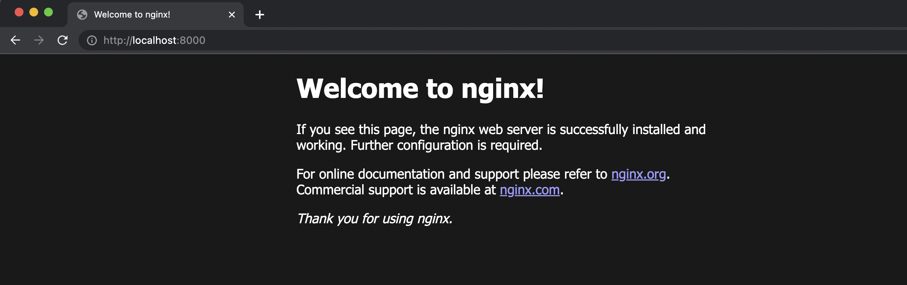
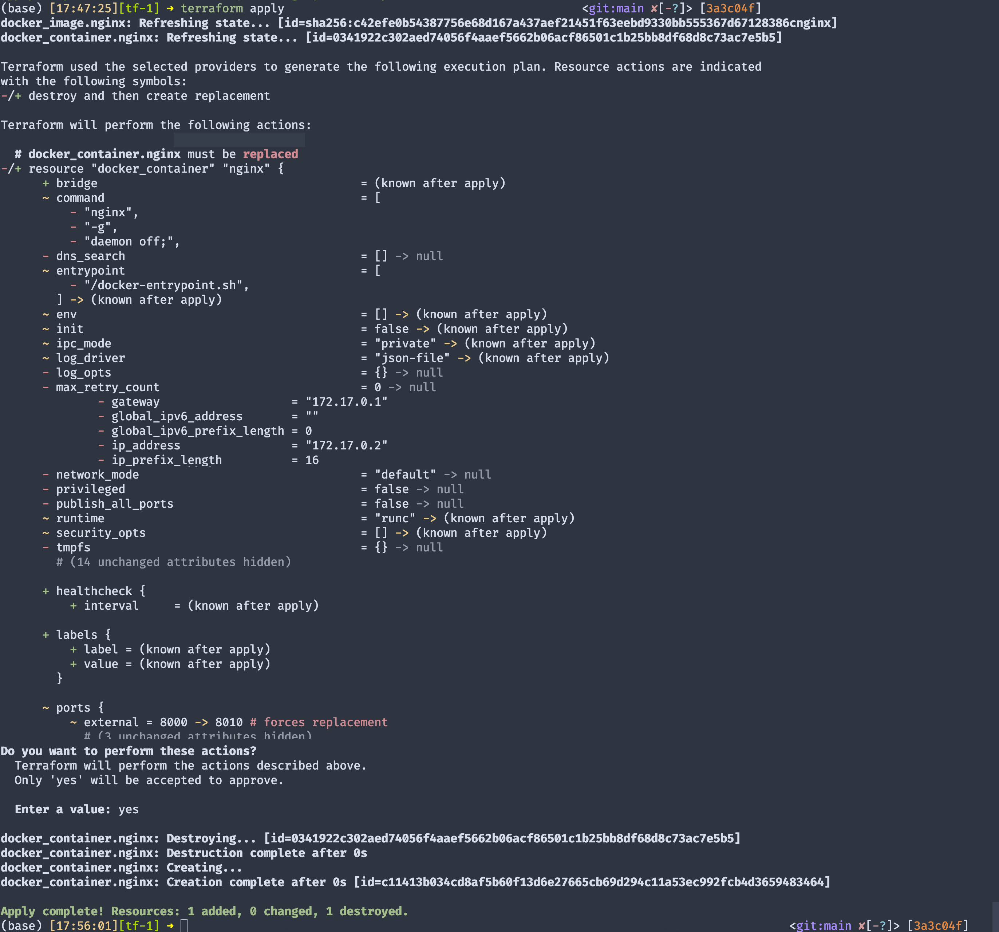

Introduction
Terraform from Hasicorp is Infrastructure as Code(IaC) tool that is gaining popularity among the data engineers. It lets us build, change and version infrastructure safely and efficiently. As to why one needs Terraform, I shall direct you to this comprehensive article.
In this post, I will write a small guide to get us started with Terraform. This post then can be used as a starting guide for my future posts involving Terraform.
Note that this installation guide is only for Mac(M1 silicon) and Ubuntu(GCP E2-medium instance). Also this guide will look similar to the example provided in Hashicorp’s website. The intention is to have a guide for my benefit in one place.
Prerequisites
A fully functional Macbook or an Ubuntu GCP/AWS instance with sudo privileges.
Terraform Install
I follow the Hashicorp guide and give commentary when needed. We will use Homebrew tool in Mac to install. Install it if you haven’t already.
Terminal for Mac
/bin/bash \
-c "$(curl -fsSL https://raw.githubusercontent.com/Homebrew/install/HEAD/install.sh)"
brew tap hashicorp/tap
brew install hashicorp/tap/terraform
which terraform
terraform --version- 1
- Install homebrew and add hashicorp’s repo
- 2
- Install latest Terraform
- 3
-
To check if terraform is correctly installed. It should display
/opt/homebrew/bin/terraform. Otherwise checkPATH. - 4
- Verify installation
Terminal for Ubuntu
#Commands install Hashicorp's GPG key, its repo,
#verifies key's fingerprint.
#Don't worry if you see gibberish after executing the second command.
#Carry on with next commands.
sudo apt update && sudo apt install -y gnupg software-properties-common curl
curl -fsSL https://apt.releases.hashicorp.com/gpg | sudo apt-key add -
sudo apt-add-repository "deb [arch=amd64] https://apt.releases.hashicorp.com $(lsb_release -cs) main"
sudo apt update && sudo apt-get install terraform
terraform --version- 1
- Update system and install terraform
- 2
- Verify installation
Additionally, operating from terminal can be strengthened using tab completion. Refer this.
Docker Installation - Optional but recommended
Terminal
cd ~
wget https://desktop.docker.com/mac/main/arm64/Docker.dmgDouble click on the .dmg file to install. Refer this section for more.
Note that both docker engine and docker-compose are bundled with desktop in Mac
Since we’re using a cloud instance we don’t need to install docker desktop. We can go ahead install just docker engine and docker-compose.
Terminal
cd ~
sudo apt update && sudo apt install docker.io -y
mkdir soft && cd soft
wget https://github.com/docker/compose/releases/download/v2.17.2/docker-compose-linux-x86_64 -O docker-compose
chmod +x docker-compose
echo 'export PATH="/home/'$USER'/soft:$PATH"' >> ~/.bashrc
sudo groupadd docker
sudo usermod -aG docker $USER- 1
- Update system and install docker-enginer
- 2
- Create a new directory, download docker-compose and make it executable
- 3
- Export the path of the docker-compose exe to system’s PATH.
- 4
- Add docker to the group and user management.
Now logout and log back into the instance. To test if docker is installed correctly run,
Terminal
docker run --rm hello-world- 1
-
hello-worlddocker image will be downloaded and run. A messageHello from Docker!will be displayed.
Getting started with Terraform
- In Mac start
docker-desktopeither clicking the app or usingopen -a Dockerin terminal. InUbuntuthedocker-engineis running in the background so this step is not needed. - Make a new directory for this tutorial using
mkdir tf-1and go inside it. - Create a
main.tfand copy the following contents into it.
main.tf
terraform {
required_providers {
docker = {
source = "kreuzwerker/docker"
version = "~> 3.0.1"
}
}
}
provider "docker" {}
resource "docker_image" "nginx" {
name = "nginx"
keep_locally = false
}
resource "docker_container" "nginx" {
image = docker_image.nginx.image_id
name = "tutorial"
ports {
internal = 80
external = 8000
}
}- 1
- Check terraform version and downloads a docker plugin
- 2
- Downloads the nginx docker image
- 3
- Create a nginx docker container and maps the port 80 to 8000
What is main.tf?
It is a terraform configuration file that describes infrastructure in Terraform. Each terraform config needs a separate directory with a single main.tf.
This file contains:
- Terraform block
- Providers
- Resources
Terraform block
This block contains Terraform settings for require providers that Terraform will use to provision infrastructure. In our case it is kreuzwerker/docker as source. kreuzwereker is the provider/developer/host and docker is the product we are interested in using. We can specify the minimum version to install. If not mentioned, Terraform will install the lastest version available. Terraform registry is default place to look for popular providers such as AWS, GCP, Azure.
terraform {
required_providers {
docker = {
source = "kreuzwerker/docker"
version = "~> 3.0.1"
}
}
}Providers
Now that Terraform knows the “source”, we need to provide a “provider”. Docker is our choice. In this block we can configure docker provider.
provider "docker" {}Resources
A resource block is used to define components of the provider previously mentioned. So we have a docker provider. We need a docker image and build a container for that image.
resource "docker_image" "nginx" {
name = "nginx"
keep_locally = false
}
resource "docker_container" "nginx" {
image = docker_image.nginx.image_id
name = "tutorial"
ports {
internal = 80
external = 8000
}
}The resource block takes two strings - resource type and resource name. docker_image is the type and nginx is the name. These two together docker_image.nginx form a unique ID for the resource. For docker_container resource, we use the image from the previous block as reference. So a container is created with that image and ports are also mapped.
Validate and initialise the configuration
Terraform has a bunch of CLI commands to make things easier and faster. One needs to remember only 5-6 commands. Rest can be looked up later.
To validate the configuration we use
Terminal
terrform validate- 1
- Returns “Success! The configuration is valid.” if syntactically valid.
Then we need to initialise our configuration. This process will download and install the providers mentioned. This command will create a hidden directory .terraform and install docker provider. Terraform also creates a lock file named .terraform.lock.hcl which specifies the exact provider versions used, so that you can control when you want to update the providers used for your project.
Plan and create infrastructure
Terraform allows us to see what will be created through terraform plan commands. This command is used to give an overview of the things that will be created. An extra, precautionary step. It looks trivial for our use case but imagine a big organisation with several team members managing infrastructure. Even deleting a resource accidently will create chaos. It is always advised to run terraform plan, overview and then go ahead with creating resources.
terraform apply is then given to apply the configuration. This is then approved to actually create resources. In our case a nginx docker image is downloaded and container using that image is created with port forwarding.
Result
A nginx server has been started and we can access it through http:127.0.0.1:8000. We will be greeted with a message “Welcome to nginx!”.

Terraform state
Terraform has a state(status) file which stores the current state(metadata) of the infrastructure. Any changes to the resource configuration will be reflected into this file. If working in a team, it is advised to store this state file remotely such as s3, gcs etc with versioning and state locking.
Tweaking the infrastructure
To understand state file better, we shall change the port from 8000 to 8010 in the docker_container resource block.
resource "docker_container" "nginx" {
image = docker_image.nginx.image_id
name = "tutorial"
ports {
internal = 80
external = 8010
}
}You will see that there will be two state files - terraform.tfstate and terraform.tfstate.backup. On the first run both file’s contents will be same. However, now that we changed the port to 8010, terraform.tfstate will change 8010 but the backup file will retain 8000. This is Terraform’s rollback feature.
Apply the changes using terraform apply.

Destroy infrastructure
To destroy resources after use, we can use terraform destroy command. Review the plan and approve it. Be cautious using this command in an organisation.
Conclusion
We setup Terraform in our machine, created an infrastructure and managed it. To know more about docker with terraform, refer this guide.